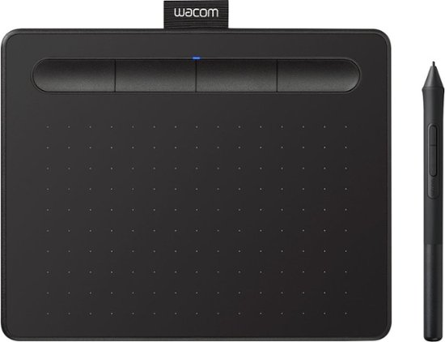
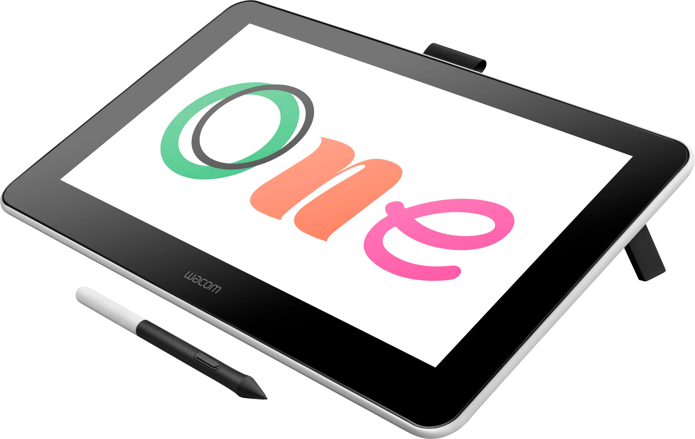
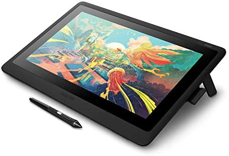

Drawing Tools

Wacom Intuous
The Wacom Intuous is a great starting tablet for a reasonable price. It is considered to be relatively small with only a 9 inch by 5 inch dimension, but it is good for beginners who want to start drawing without a huge initial investment.

Wacom One
Wacom One is a good sized tablet with a display screen measuring 13.3 inches. With the Wacom One, you can create diagrams, enhance photos and videos, and use various software on the tablet to enhance your skills. There is a paper-like canvas so it feels like you are drawing on paper, and not glass.

Wacom Cintiq
The Wacom Cintiq is the most expensive tablet on the list, and is the most precise out of the three. Retailing at approximately $1300, the Cintiq has the largest screen at 21.5 inches, and is the next step up for digital artists. The Cintiq is what most professional digital artists use, and boasts an ergonomic design with a vibrant display.